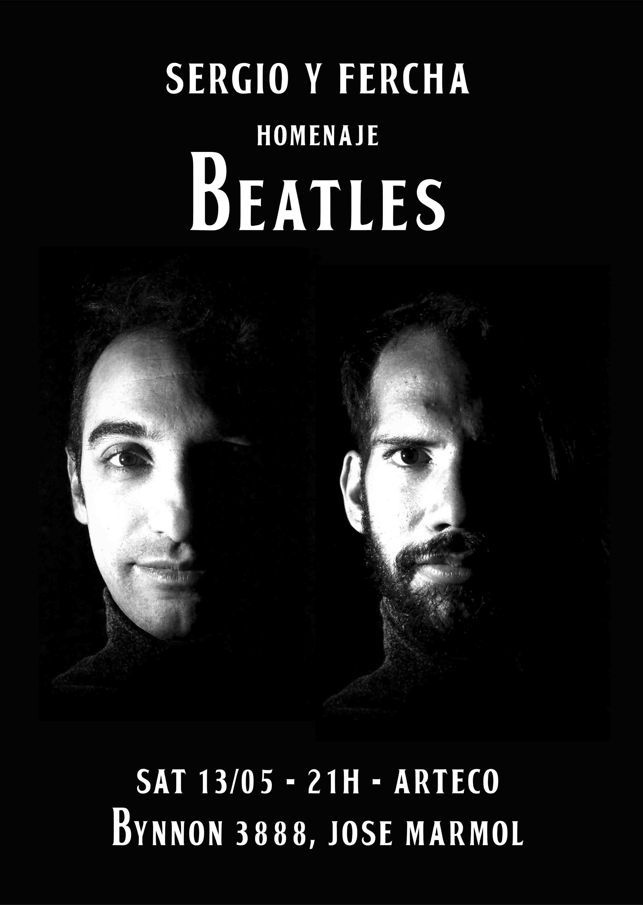

La Familia Argentina
Editorial
La Familia Argentina es una revista que realiza una breve historia de las primeras bandas nacionales consideradas de "la nueva ola", producto de la reapertura democrática en 1983, entre ellas se destacan bandas como Virus, GIT, Soda Stereo, Viuda e Hijas de Roque Enroll y Los Twist entre otras. Estas bandas fueron marcadas por una nueva corriente estética influenciada por el cambio social que atravesaba Argentina en aquellos años.


Afiches
Flyers para eventos musicales



Video
Remake del trailer de la película The kid (el pibe) de Charlie Chaplin. SINOPSIS: Una mujer joven, Edna, acaba de dar a luz a un hijo no deseado. Con el dolor de su alma, decide dejar al niño dentro del elegante automóvil de cierta familia adinerada, junto a una nota en la que brevemente le pide que se haga cargo de su hijo. Pero unos delincuentes que se roban el auto, dejan al bebé abandonado en la esquina de un barrio marginal. Es allí donde lo encuentra un alegre, despreocupado e inocente vagabundo, quien, si bien en varias ocasiones intenta deshacerse de semejante responsabilidad, se compadece de él y decide adoptarlo y asumir su crianza.
Diseños
Trabajos prácticos realizados en la Universidad Nacional de Lanús